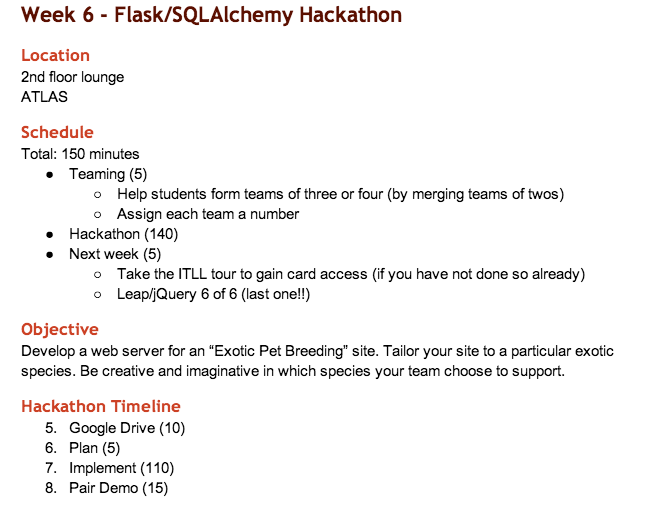
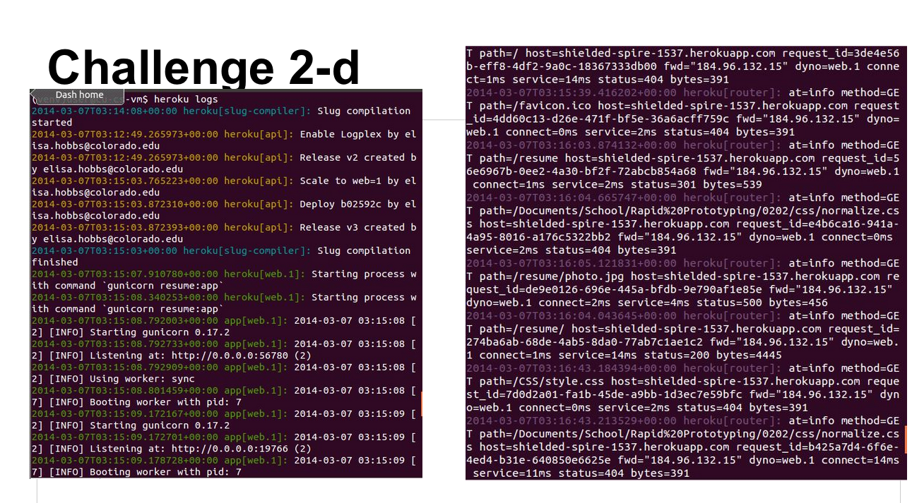

How to Engage Computer Science Students:
Instructional Models, Data Collection, and Software for an Active Classroom
Michael Skirpan
++added help from desk.js
Michael Skirpan
++added help from desk.js
Outline
What the %*$# are we talking about (short)
Our Class Model (long)
Data and Analysis (long)
Software (short)
Disclaimer: This next part is theoretical!
Preliminary Distinctions
Traditional Education
- Subject Matter is a pre-determined body of information
- Skills are known from past experience
- Transmit old knowledge to new generation
- Teacher is knowledge holder
- Students are to be passive and orderly
- Knowledge is brought INTO the classroom
See: Dewey, John. Experience and Education. TouchStone. 1938.
Preliminary Distinctions
Progressive Education
- Student must discover knowledge in his/her own way (i.e., experiential learning)
- Teacher is facilatator who may be wrong from time to time...
- Frameworks are useful, but real knowledge comes from practice
- Learning is social
- Knowledge is CREATED in the classroom
Traditional Classes are Boring!
(and have a tendency to exclude some people)
One more important thing..
Education that is fully owned by students is:
Democratic Education
Defined as an education where the students govern the policies and curriculum. In a proper democratic classroom, what students determine cannot be overturned by teacher or administration.
To practice democratic education does not mean you cannot structure your class, but that there should be open conversation about what is and is not working in a classroom, and students should be empowered to suggest changes.
We should be concerned, well.. because students are going broke for a good education
Traditional Classrooms
Common practices:
Teacher Lectures
Students Take Notes
Homework is where learning is applied
Individualized Exams
End of semester project
Looks something like this:
Flipped Classroom (Redux)
We have borrowed some features of Eric Mazur's Flipped Classroom. The original flipped classroom is:
- Students have 'lecture' outside of class
- Class time is spend doing and asking questions
Our Modification
- Students do hack-a-thons in peer groups during class
- "Homework" is a series of challenges that actively take students through learning exercise
The flipped model looks something like this:
Let's slow down a minute...there's more to it.
Implementation 1
Spring 2014 - User-Centered Development and Design. In teaching this class, we implemented a number of experimental ideas:
- Hack-a-thon Classes
- Design Challenge Homeworks
- Student Journals to Record Feedback
- Google Drive API for Data
- Group Projects on GitHub
So some new stuff, but not everything yet..
Google Drive for all Materials:
Hack-a-thon
What it looks like:

Challenges
Journal
Fall Semester
Fall 2014 - HCI Topics: Big Data. We will continue with the classroom style we had this semester, PLUS:
- Classroom Forum
- Real-time Feedback
- Some in-class discussion/debate time
Data Collection
Google Drive API
We made use of Google Drive's Revision History API to collect data on how students work both in and out of class.
Then while writing API scripts, I hit a snag in our plan...
Current limitations with Google Drive
- Only coarse-grain revision histories exposed in API
- Broken export links on presentations
- Some API response values missing
So we've now met with the drive team from both Google Boulder and NYC, and, with interest on their part, will likely have a work-able API for the autumn.
However, we were still able to pull data from the journals and coarse-grain histories to do some analysis.
Patterns for when students do their homework
Kudos to d3.js for helping me render a pretty graph
Histogram of how challenging one week's homework was:
Thanks to matplotlib for showing me that homework was very hard this week.
Lesson learned from this analysis:
Always give really clear directions on how naming conventions and responses should look or else you'll be dealing with exceptions for hours, and hours, and hours...
What the future holds
Software for automation
Following the next iteration of our classroom design (and assuming Google fixes its API bugs), I hope to have a software package that:
- Sets up student folders
- Distributes templates for hack-a-thons and challenges
- Collects data and reports learning analytics (i.e., graphs and stats) in weekly batches
Upcoming Challenges Include:
- Social Network Analysis
- Public Forum
- Extending the Model for Use in High School Classrooms
Questions??
/